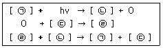
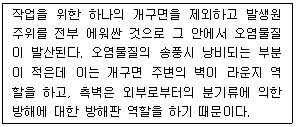
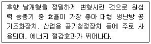
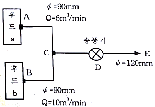
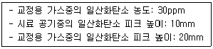
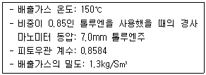
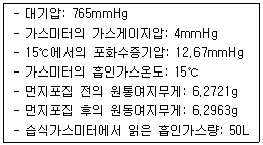
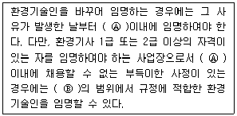
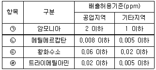
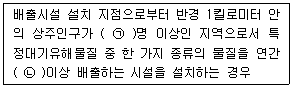

대기환경기사 (2021-05-15 기출문제)
1과목: 대기오염 개론
1. 대기 압력이 990mb인 높이에서의 온도가 22℃일 때, 온위(K)는?
- 275.63
- 280.63
- 286.46
- 295.86
(정답률: 71%)

2. 자동차 배출가스 정화장치인 삼원촉매장치에 관한 내용으로 옳지 않은 것은?
- HC는 CO2와 H2O로 산화되며, NOx는 N2로 환원된다.
- 우수한 효율을 얻기 위해서는 엔진에 공급되는 공기연료비가 이론공연비이어야 한다.
- 두개의 촉매 층이 직렬로 연결되어 CO, HC, NOx를 동시에 처리할 수 있다.
- 일반적으로 로듐촉매는 CO와 HC를 저감시키는 반응을 촉진시키고 백금촉매는 NOx를 저감시키는 반응을 촉진시킨다.
(정답률: 67%)
3. 다음 중 오존층 보호와 가장 거리가 먼 것은?
- 헬싱키 의정서
- 런던 회의
- 비엔나 협약
- 코펜하겐 회의
(정답률: 65%)
4. 다음 중 오존파괴지수가 가장 작은 물질은?
- CCI4
- CF3Br
- CF2BrCI
- CHFCICF3
(정답률: 60%)
5. 산성비에 관한 설명으로 가장 거리가 먼 것은?
- 산성비는 대기 중에 배출되는 황산화물과 질소산화물이 황산, 질산 등의 산성물질로 변하여 발생한다.
- 산성비 문제를 해결하기 위하여 질소산화물 배출량 또는 국가 간 이동량을 최저 30% 삭감하는 몬트리올 의정서가 채택되었다.
- 산성비가 토양에 내리면 토양은 Ca2+, Mg2+, Na+, K+등의 교환성염기를 방출하고, 그 교환자리에 H+가 치환된다.
- 일반적으로 산성비란 pH가 5.6이하인 강우를 뜻하는데, 이는 자연 상태에 존재하는 CO2가 빗방울에 흡수되어 평형을 이루었을 때의 pH를 기준으로 한 것이다.
(정답률: 71%)
6. 1984년 인도 중부지방의 보팔시에서 발생한 대기오염사건의 원인물질은?
- CH3CNO
- SOx
- H2S
- COCI2
(정답률: 66%)
7. 리차드슨 수(Ri)에 관한 내용으로 옳지 않은 것은?
- Ri수가 0에 접근하면 분산이 줄어든다.
- Ri수가 0일 때 대기는 중립상태가 되고 기계적 난류가 지배적이다.
- Ri수가 큰 양의 값을 가지면 대류가 지배적이어서 강한 수직운동이 일어난다.
- Ri수는 무차원수로 대류 난류를 기계적 난류로 전환시키는 비율을 나타낸 것이다.
(정답률: 58%)
8. 대기 중의 광화학반응에서 탄화수소와 반응하여 2차오염물질을 형성하는 화학종과 가장 거리가 먼 것은?
- CO
- -OH
- NO
- NO2
(정답률: 55%)
9. 입자상물질의 농도가 0.25mg/m3이고, 상대습도가 70%일 때, 가시거리(km)는? (단, 상수 A는 1.3)
- 4.3
- 5.2
- 6.5
- 7.2
(정답률: 72%)
10. 대기오염물질은 발생방법에 따라 1차오염물질과 2차오염물질로 구분할 수 있다. 2차오염물질에 해당하는 것은?
- CO
- H2S
- NOCI
- (CH3)2S
(정답률: 68%)
11. 탄화수소가 관여하지 않을 경우 NO2의 광화학반응식이다. ㉠~㉣에 알맞은 것은? (단, O는 산소원자)

- ㉠ NO, ㉡ NO2, ㉢ O3, ㉣ O2
- ㉠ NO2, ㉡ NO, ㉢ O2, ㉣ O3
- ㉠ NO, ㉡ NO2, ㉢ O2, ㉣ O3
- ㉠ NO2, ㉡ NO, ㉢ O3, ㉣ O2
(정답률: 77%)
12. 표준상태에서 일산화탄소 12ppm은 몇 ug/Sm3인가?
- 12000
- 15000
- 20000
- 22400
(정답률: 68%)
13. 열섬효과에 관한 내용으로 가장 거리가 먼 것은?
- 구름이 많고 바람이 강한 주간에 주로 발생한다.
- 일교차가 심한 봄, 가을이나 추운겨울에 주로 발생한다.
- 교외지역에 비해 도시지역에 고온의 공기층이 형성된다.
- 직경이 10km이상인 도시에서 자주 나타나는 현상이다.
(정답률: 71%)
14. 질소산화물(NOx)에 관한 내용으로 옳지 않은 것은?
- NO2는 적갈색의 자극성 기체로 NO보다 독성이 강하다.
- 질소산화물은 fuel NOx와 thermal NOx로 구분될 수 있다.
- NO는 혈액 중 헤모글로빈과의 결합력이 CO보다 강하다.
- N2O는 무색, 무취의 기체로 대기 중에서 반응성이 매우 크다.
(정답률: 63%)
15. 납이 인체에 미치는 영향에 관한 일반적인 내용으로 가장 거리가 먼 것은?
- 신경, 근육장애가 발생하며 경련이 나타난다.
- 헤모글로빈의 기본요소인 포르피린 고리의 형성을 방해한다.
- 인체 내 노출된 납의 99%이상은 뇌에 축적된다.
- 세포 내의 SH기와 결합하여 헴(Heme)합성에 관여하는 효소를 포함한 여러 세포의 효소작용을 방해한다.
(정답률: 75%)
16. 고도가 높아짐에 따라 기온이 급격히 떨어져 대기가 불안정하고 난류가 심할 때, 연기의 확산 형태는?
- 상승형(lofting)
- 환상형(looping)
- 부채형(fanning)
- 훈중형(fumigation)
(정답률: 63%)
17. 가우시안모델을 전개하기 위한 기본적인 가정으로 가장 거리가 먼 것은?
- 연기의 확산은 정상상태이다.
- 풍하방향으로의 확산은 무시한다.
- 고도가 높아짐에 따라 풍속이 증가한다.
- 오염분포의 표준편차는 약 10분간의 대표치이다.
(정답률: 64%)
18. 물질의 특성에 관한 설명으로 옳은 것은?
- 디젤차량에서는 탄화수소, 일산화탄소, 납이 주로 배출된다.
- 염화수소는 플라스틱공업, 소다공업 등에서 주로 배출된다.
- 탄소의 순환에서 가장 큰 저장고 역할을 하는 부분은 대기이다.
- 불소는 자연상태에서 단분자로 존재하며 활성탄 제조 공정, 연소공정 등에서 주로 배출된다.
(정답률: 69%)
19. 바람에 관한 내용으로 옳지 않은 것은?
- 경도풍은 기압경도력, 전향력, 원심력이 평형을 이루어 부는 바람이다.
- 해륙풍 중 해풍은 낮 동안 햇빛에 더워지기 쉬운 육지 쪽 지표상에 상승기류가 형성되어 바다에서 육지로 부는 바람이다.
- 지균풍은 마찰력이 무시될 수 있는 고공에서 기압경도력과 전향력이 평형을 이루어 등압선에 평행하게 직선운동을 하는 바람이다.
- 산풍은 경사면 → 계곡 → 주계곡으로 수렴하면서 풍속이 감속되기 때문에 낮에 산 위쪽으로 부는 곡풍보다 세기가 약하다.
(정답률: 71%)
20. 대기 중의 오존층 파괴에 관한 설명으로 옳지 않은 것은?
- 오존층의 두께는 적도지방이 극지방보다 얇다.
- 오존층 파괴물질이 오존층을 파괴하는 자유라디칼을 생성시킨다.
- 성층권의 오존층 농도가 감소하면 지표면에 보다 많은 양의 자외선이 도달한다.
- 프레온가스의 대체물질인 HCFCs(hydrochlorofluorocarbons)은 오존층 파괴능력이 없다.
(정답률: 70%)
2과목: 연소공학
21. 석탄의 탄화도가 증가할수록 나타나는 성질로 옳지 않은 것은?
- 휘발분이 감소한다.
- 발열량이 증가한다.
- 착화온도가 낮아진다.
- 고정탄소의 양이 증가한다.
(정답률: 58%)
22. 착화온도에 관한 설명으로 옳지 않은 것은?
- 발열량이 낮을수록 높아진다.
- 산소농도가 높을수록 낮아진다.
- 반응활성도가 클수록 높아진다.
- 분자구조가 간단할수록 높아진다.
(정답률: 56%)
23. 확산형 가스버너 중 포트형에 관한 설명으로 가장 거리가 먼 것은?
- 가스와 공기를 함께 가열할 수 있다.
- 포트의 입구가 작으면 슬래그가 부착되어 막힐 우려가 있다.
- 역화의 위험이 있기 때문에 반드시 역화 방지기를 부착해야 한다.
- 밀도가 큰 가스 출구는 상부에, 밀도가 작은 가스 출구는 하부에 배치되도록 설계한다.
(정답률: 46%)
24. 공기 중의 산소 공급 없이 연료 자체가 함유하고 있는 산소를 이용하여 연소하는 연소형태는?
- 자기연소
- 확산연소
- 표면연소
- 분해연소
(정답률: 73%)
25. 석탄ㆍ석유 혼합연료(COM)에 관한 설명으로 가장 적합한 것은?
- 별도의 탈황, 탈질 설비가 필요 없다.
- 별도의 개조 없이 증유 전용 연소시설에 사용될 수 있다.
- 미분쇄한 석탄에 물과 첨가제를 섞어서 액체화시킨 연료이다.
- 연소가스의 연소실 내 체류시간 부족, 분서변의 폐쇄와 마모 등의 문제점을 갖는다.
(정답률: 45%)
26. 저발열량이 6000kcal/Sm3, 평균정압비열이 0.38kcal/Sm3ㆍC인 가스연료의 이론연소온도(℃)는? (단, 이론 연소가스량은 10Sm3/Sm3, 연료와 공기의 온도는 15℃, 공기는 예열되지 않으며 연소가스는 해리되지 않음)
- 1385
- 1412
- 1496
- 1594
(정답률: 58%)
27. 기체연료의 일반적인 특징으로 가장 거리가 먼 것은?
- 적은 과잉공기로 완전연소가 가능하다.
- 연소 조절, 점화 및 소화가 용이한 편이다.
- 연료의 예열이 쉽고, 저질연료로 고온을 얻을 수 있다.
- 누설에 의한 역화ㆍ폭발 등의 위험이 작고, 설비비가 많이 들지 않는다.
(정답률: 72%)
28. 중유를 A, B, C 중유로 구분할 때, 구분기준은?
- 점도
- 비중
- 착화온도
- 유황함량
(정답률: 62%)
29. 중유를 사용하는 가열로의 배출가스를 분석한 결과 N2:80%, CO:12%, O2:8%의 부피비를 얻었다. 공기비는?
- 1.1
- 1.4
- 1.6
- 2.0
(정답률: 51%)
30. 메탄 1mol이 완전연소할 때, AFR은? (단, 부피 기준)
- 6.5
- 7.5
- 8.5
- 9.5
(정답률: 55%)
31. 프로판과 부탄을 1:1의 부피비로 혼합한 연료를 연소했을 때, 건조 배출가스 중의 CO2농도가 10%이다. 이 연료 4m3를 연소했을 때 생성되는 건조 배출가스의 양(Sm3)은? (단, 연료 중의 C성분은 전량 CO2로 전환)
- 1⑤
- 140
- 175
- 210
(정답률: 46%)
32. C:85%, H:10%, S:5%의 중량비를 갖는 중유 1kg을 1.3의 공기비로 완전연소시킬 때, 건조 배출가스 중의 이산화황 부피분율(%)은? (단, 황 성분은 전량 이산화황으로 전환)
- 0.18
- 0.27
- 0.34
- 0.45
(정답률: 52%)
33. 액화석유가스(LPG)에 관한 설명으로 가장 거리가 먼 것은?
- 발열량이 높고, 유황분이 적은 편인다.
- 증발열이 5~10kcal/kg로 작아 취급이 용이하다.
- 비중이 공기보다 커서 누출 시 인화ㆍ폭발의 위험성이 높은 편이다.
- 천연가스에서 회수되거나 나프타의 열분해에 의해 얻어지기도 하지만 대부분 석유정제시 부산물로 얻어진다.
(정답률: 63%)
34. 수소 13%, 수분 0.7%이 포함된 중유의 고발열량이 5000kcal/kg일 때, 이 중유의 저발열량(kcal/kg)은?
- 4126
- 4294
- 4365
- 4926
(정답률: 58%)
35. 매연 발생에 관한 설명으로 옳지 않은 것은?
- 연료의 C/H 비가 클수록 매연이 발생하기 쉽다.
- 분해되기 쉽거나 산화되기 쉬운 탄화수소는 매연 발생이 적다.
- 탄소결합을 절단하기보다 탈수소가 쉬운 쪽이 매연이 발생하기 쉽다.
- 중합 및 고리화합물 등과 같이 반응이 일어나기 쉬운 탄화수소일수록 매연 발생이 적다.
(정답률: 56%)
36. 불꽃점화기관에서 연소과정 중 발생하는 노킹현상을 방지하기 위한 기관의 구조에 관한 설명으로 가장 거리가 먼 것은?
- 연소실을 구형(circular type)으로 한다.
- 점화플러그를 연소실 중심에 설치한다.
- 난류를 증가시키기 위해 난류생성 pot을 부착시킨다.
- 말단가스를 고온으로 하기위해 삼원촉매시스템을 사용한다.
(정답률: 55%)
37. 연소 배출가스의 성분 분석결과 CO2가 30%, O2가 7%일 때, (CO2)max(%)는?
- 35
- 40
- 45
- 50
(정답률: 52%)
38. 가연성 가스의 폭발범위와 그 위험도에 관한 설명으로 옳지 않은 것은?
- 폭발하한값이 높을수록 위험도가 증가한다.
- 일반적으로 가스의 온도가 높아지면 폭발범위가 넓어진다.
- 폭발한계농도 이하에서는 폭발성 혼합가스를 생성하기 어렵다.
- 가스 압력이 높아졌을 때 폭발하한값은 크게 변하지 않으나 폭발상한값은 높아진다.
(정답률: 52%)
39. 액체연료의 연소버너에 관한 설명으로 가장 거리가 먼 것은?
- 유압분무식 버너는 유량조절 범위가 좁은 편이다.
- 회전식 버너는 유압식 버너에 비해 연료유의 분무화 입경이 크다.
- 고압공기식 버너의 분무각도는 40~90°정도로 저압공기식 버너에 비해 넓은 편이다.
- 저압공기식 버너는 주로 소형 가열로에 이용되고, 분무에 필요한 공기량은 이론 연소 공기량의 30~50%정도이다.
(정답률: 53%)
40. 등가비(Φ, equivalent ratio)에 관한 내용으로 옳지 않은 것은?
- 등가비(Φ)는
 로 정의된다.
로 정의된다. - Φ＜1일 때, 공기 과잉이며 일산화탄소(CO) 발생량이 적다.
- Φ＞1일 때, 연료 과잉이며 질소산화물(NOx) 발생량이 많다.
- Φ=1일 때, 연료와 산화제의 혼합이 이상적이며 연료가 완전연소된다.
(정답률: 53%)
3과목: 대기오염 방지기술
41. 집진율이 85%인 싸이클론과 집진율이 96%인 전기집진장치를 직렬로 연결하여 입자를 제거할 경우, 총 집진효율(%)은?
- 90.4
- 94.4
- 96.4
- 99.4
(정답률: 62%)
42. 다음에서 설명하는 후드 형식으로 가장 적합한 것은?

- slot형 후드
- booth형 후드
- canopy형 후드
- exterior형 후드
(정답률: 64%)
43. 다음에서 설명하는 송풍기 유형은?

- 프로펠러형(propeller)
- 비행기 날개형(airfoil blade)
- 방사 날개형(radial blade)
- 전향 날개형(forward curved)
(정답률: 57%)
44. 전기집진기의 음극(-)코로나 방전에 관한 내용으로 옳은 것은?
- 주로 공기정화용으로 사용된다.
- 양극(+)코로나 방전에 비해 전계강도가 약하다.
- 양극(+)코로나 방전에 비해 불꽃 개시 전압이 낮다.
- 양극(+)코로나 방전에 비해 코로나 개시 전압이 낮다.
(정답률: 48%)
45. 층류의 흐름인 공기 중을 입경이 2.2㎛, 밀도가 2400g/L인 구형입자가 자유낙하하고 있다. 구형입자의 종말속도(m/s)는? (단, 20℃에서 공기의 밀도는 1.29g/L, 공기의 점도는 1.81×10-4poise)
- 3.5×10-6
- 3.5×10-5
- 3.5×10-4
- 3.5×10-3
(정답률: 42%)
46. 유해가스 흡수장치 중 충전탑(Packed tower)에 관한 설명으로 옳지 않은 것은?
- 온도의 변화가 큰 곳에는 적응성이 낮고, 희석열이 심한 곳에는 부적합하다.
- 충전제에 흡수액을 미리 분사시켜 엷은층을 형성시킨 후 가스를 유입시켜 기ㆍ액 접촉을 극대화한다.
- 액분산형 가스흡수장치에 속하며, 효율을 높이기 위해서는 가스의 용해도를 증가시켜야한다.
- 흡수액을 통과시키면서 가스유속을 증가시킬 때, 충전층 내의 액보유량이 증가하는 것을 flooding이라 한다.
(정답률: 56%)
47. 미세입자가 운동하는 경우에 작용하는 마찰저항력(drag force)에 관한 내용으로 가장 거리가 먼 것은?
- 마찰저항력은 항력계수가 커질수록 증가한다.
- 마찰저항력은 입자가 투영면적이 커질수록 증가한다.
- 마찰저항력은 레이놀즈수가 커질수록 증가한다.
- 마찰저항력은 상대속도의 제곱에 비례하여 증가한다.
(정답률: 49%)
48. 유해가스 처리에 사용되는 흡수액의 조건으로 옳은 것은?
- 점성이 커야 한다.
- 끓는점이 높아야 한다.
- 용해도가 낮아야 한다.
- 어는점이 높아야 한다.
(정답률: 53%)
49. 다이옥신의 처리방법에 관한 내용으로 옳지 않은 것은?
- 촉매분해법: 금속산화물(V2O5, TiO2), 귀금속(Pt, Pd)이 촉매로 사용된다.
- 오존분해법: 산성 조건일수록 분해속도가 빨라지는 것으로 알려져 있다.
- 광분해법: 자외선파장(250~340nm)이 가장 효과적인 것으로 알려져 있다.
- 열분해방법: 산소가 아주 적은 환원성 분위기에서 탈염소화, 수소첨가반응 등에 의해 분해시킨다.
(정답률: 51%)
50. 원형 덕트(duct)의 기류에 의한 압력손실에 관한 내용으로 옳지 않은 것은?
- 곡관이 많을수록 압력손실이 작아진다.
- 관의 길이가 길수록 압력손실은 커진다.
- 유체의 유속이 클수록 압력손실은 커진다.
- 관의 직경이 클수록 압력손실은 작아진다.
(정답률: 63%)
51. 배출가스 중의 일산화탄소를 제거하는 방법 중 가장 실질적이고, 확실한 것은?
- 활성탄 등의 흡착제를 사용하여 흡착제거
- 벤츄리스크러버나 충전탑 등으로 세정하여 제거
- 탄산나트륨을 사용하는 시보드법을 적용하여 제거
- 백금계 촉매를 사용하여 무해한 이산화탄소로 산화시켜 제거
(정답률: 59%)
52. NO 농도가 250ppm인 배기가스 2000Sm3/min을 CO를 이용한 선택적 접촉 환원법으로 처리하고자 한다. 배기가스 중의 NO를 완저히 처리하기 위해 필요한 CO의 양(Sm3/h)은?
- 30
- 35
- 40
- 45
(정답률: 31%)
53. 유해가스의 처리에 사용되는 흡착제에 관한 일반적인 설명으로 가장 거리가 먼 것은?
- 실리카겔은 250℃이하에서 물과 유기물을 잘 흡착한다.
- 활성탄은 극성물질 제거에는 효과적이지만, 유기용매 회수에는 효과적이지 않다.
- 활성알루미나는 기체 건조에 주로 사용되며 가열로 재생시킬 수 있다.
- 합성제올라이트는 극성이 다른 물질이나 포화정도가 다른 탄화수소의 분리에 효과적이다.
(정답률: 56%)
54. 집진장치의 압력손실이 300mmH2O, 처리가스량이 500m3/min, 송풍기 효율이 70%, 여유율이 1.0이다. 송풍기를 하루에 10시간씩 30일을 가동할 때, 전력요금(원)은? (단, 전력요금은 1kWh 당 50원)
- 525210
- 1⑤0420
- 315126⑤
- 22⑤8823
(정답률: 44%)
55. 여과집진장치의 탈진방식에 관한 설명으로 옳지 않은 것은?
- 간헐식은 먼지의 재비산이 적고 높은 집진율을 얻을 수 있다.
- 연속식은 탈진시 먼지의 재비산이 일어나 간헐식에 비해 집진율이 낮고 여표의 수명이 짧은 편이다.
- 연속식은 포집과 탈진이 동시에 이루어져 압력손실의 변동이 크므로 고농도, 저용량의 가스처리에 효율적이다.
- 간헐식의 여포 수명은 연속식에 비해서는 긴 편이고, 점성이 있는 조대먼지를 탈진할 경우 여포 손상의 가능성이 있다.
(정답률: 58%)
56. 전기집진장치에서 먼지의 전기비저항이 높은 경우 전기비저항을 낮추기 위해 일반적으로 주입하는 물질과 가장 거리가 먼 것은?
- NH3
- NaCI
- H2SO4
- 수증기
(정답률: 53%)
57. 다음 그림과 같은 배기시설에서 관 DE를 지나는 유체의 속도는 관 BC를 지나는 유체 속도의 몇 배인가? (단, Φ는 관의 직경, Q는 유량, 마찰 손실과 밀도 변화는 무시)

- 0.8
- 0.9
- 1.2
- 1.5
(정답률: 46%)
58. 싸이클론(cyclone)에서 50%의 집진효율로 제거되는 입자의 최소입경을 나타내는 용어는?
- critical diameter
- average diameter
- cut size diameter
- analytical diameter
(정답률: 72%)
59. 환기시설의 설계에 사용하는 보충용 공기에 관한 설명으로 가장 거리가 먼 것은?
- 환기시설에 의해 작업장에서 배기된 만큼의 공기를 작업장 내로 재공급하여야 하는데 이를 보충용 공기라 한다.
- 보충용 공기는 일반 배기가스용 공기보다 많도록 조절하여 실내를 약간 양(+)압으로 하는 것이 좋다.
- 보충용 공기의 유입구는 작업장이나 다른 건물의 배기구에서 나온 유해물질의 유입을 유도하기 위해서 최대한 바닥에 가깝도록 한다.
- 여름에는 보통 외부공기를 그대로 공급하지만, 공정 내의 열부하가 커서 제어해야 하는 경우에는 보충용 공기를 냉각하여 공급한다.
(정답률: 60%)
60. 배출가스 내의 NOx 제거방법 중 건식법에 관한 설명으로 옳지 않은 것은?
- 현재 상용화된 대부분의 선택적 촉매 환원법(SCR)은 환원제로 NH3가스를 사용한다.
- 흡착법은 흡착제로 활성탄, 실리카겔 등을 사용하며, 특히 NO를 제거하는데 효과적이다.
- 선택적 촉매 환원법(SCR)은 촉매층에 배기 가스와 환원제를 통과시켜 NOx를 N2로 환원시키는 방법이다.
- 선택적 비촉매 환원법(SNCR)의 단점은 배출가스가 고온이어야 하고, 온도가 낮을 경우 미반응된 NH3가 배출될 수 있다는 것이다.
(정답률: 39%)
4과목: 대기오염 공정시험기준(방법)
61. 굴뚝 배출가스 중의 브롬화합물 분석에 사용되는 흡수액은?
- 붕산용액
- 수산화소듐용액
- 다이에틸아민동용액
- 황산+과산화수소+증류수
(정답률: 60%)
62. 불꽃이온화검출기법에 따라 분석하여 얻은 대기 시료에 대한 측정결과이다. 대기 중의 일산화탄소 농도(ppm)는?

- 15
- 35
- 40
- 60
(정답률: 45%)
63. 굴뚝 배출가스 중의 산소를 오르자트분석법에 따라 분석할 때에 관한 설명으로 옳지 않은 것은?(관련 규정 개정전 문제로 여기서는 기존 정답인 4번을 누르면 정답 처리됩니다. 자세한 내용은 해설을 참고하세요.)
- 탄산가스 흡수액으로 수산화포타슘 용액을 사용한다.
- 산소 흡수액을 만들 때는 되도록 공기와의 접촉을 피한다.
- 각각의 흡수액을 사용하여 탄산가스, 산소순으로 흡수한다.
- 산소 흡수액은 물에 수산화소듐을 녹인 용액과 물에 피로가롤을 녹인 용액을 혼합한 용액으로 한다.
(정답률: 59%)
64. 염산(1+4) 용액을 조제하는 방법은?
- 염산 1용량에 물 2용량을 혼합한다.
- 염산 1용량에 물 3용량을 혼합한다.
- 염산 1용량에 물 4용량을 혼합한다.
- 염산 1용량에 물 5용량을 혼합한다.
(정답률: 69%)
65. 굴뚝 배출가스 중의 폼알데하이드를 크로모트로핀산 자외선/가시선분광법에 따라 분석할 때, 흡수 발색액 제조에 필요한 시약은?
- H2SO4
- NaOH
- NH4OH
- CH3COOH
(정답률: 45%)
66. 흡광차분광법에 따라 분석하는 대기오염물질과 그 물질에 대한 간섭성분의 연결이 옳은 것은?
- 오존(O3)-벤젠(C6H6)의 영향
- 아황산가스(SO2)-오존(O3)의 영향
- 일산화탄소(CO)-수분(H2O)의 영향
- 질소산화물(NOx)-톨루엔(C6H5CH3)의 영향
(정답률: 50%)
67. 기체크로마토그래피의 장치 구성에 관한 설명으로 옳지 않은 것은?
- 분리관오븐의 온도조절 정밀도는 전원 전압 변동 10%에 대하여 온도변화가 ±0.5℃ 범위 이내(오븐의 온도가 150℃부근일 때)이어야 한다.
- 방사성 동위원소를 사용하는 검출기를 수용하는 검출기 오븐의 경우 온도조절 기구와 별도로 독립작용 할 수 있는 과열방지기구를 설치하여야 한다.
- 보유시간을 측정할 때는 10회 측정하여 그 평균치를 구하며 일반적으로 5~30분 정도에서 측정하는 봉우리의 보유시간은 반복시험 할 때 ±5% 오차범위 이내이어야 한다.
- 불꽃이온화 검출기는 대부분의 화합물에 대하여 열전도도 검출기보다 약 1000배 높은 감도를 나타내고 대부분의 유기 화합물을 검출할 수 있기 때문에 흔히 사용된다.
(정답률: 61%)
68. 휘발성유기화학물질(VOCs)의 누출확인방법에 관한 설명으로 옳지 않은 것은?
- 교정가스는 기기 표시치를 교정하는데 사용되는 불활성 기체이다.
- 누출농도는 VOCs가 누출되는 누출원 표면에서의 VOCs 농도로서 대조화합물을 기초로 한 기기의 측정값이다.
- 응답시간은 VOCs가 시료채취장치로 들어가 농도 변화를 일으키기 시작하여 기기계기판의 최종값이 90%를 나타내는데 걸리는 시간이다.
- 검출불가능 누출농도는 누출원에서 VOCs가 대기 중으로 누출되지 않는다고 판단되는 농도로서 국지적 VOCs배경농도의 최고값이다.
(정답률: 24%)
69. 원자흡수광광도법에 따라 원자흡광분석을 수행할 때, 빛이 스펙트럼의 불꽃 중에서 생성되는 목적원소의 원자증기 이외의 물질에 의하여 흡수되는 경우에 일어나는 간섭은?
- 물리적 간섭
- 화학적 간섭
- 이온학적 간섭
- 분광학적 간섭
(정답률: 64%)
70. 굴뚝 배출가스 중의 오염물질과 연속자동 측정방법의 연결이 옳지 않은 것은?
- 염화수소 - 이온전극법
- 불화수소 - 자외선흡수법
- 아황산가스 - 불꽃광도법
- 질소산화물 – 적외선흡수법
(정답률: 41%)
71. 굴뚝 배출가스 중의 암모니아를 중화적정법에 따라 분석할 때에 관한 설명으로 옳은 것은?(관련 규정 개정전 문제로 여기서는 기존 정답인 2번을 누르면 정답 처리됩니다. 자세한 내용은 해설을 참고하세요.)
- 다른 염기성가스나 산성가스의 영향을 받지 않는다.
- 분석용 시료용액을 황산으로 적정하여 암모니아를 정량한다.
- 시료채취량이 40L일 때 암모니아의 농도가 1~5ppm인 것의 분석에 적합하다.
- 페놀프탈레인용액과 메틸레드용액을 1:2의 부피비로 섞은 용액을 지시약으로 사용한다.
(정답률: 50%)
72. 환경대기 중의 벤조(a)피렌 농도를 측정하기 위한 주 시험방법으로 가장 적합한 것은?
- 이온크로마토그래피법
- 가스크로마토그래피법
- 흡광차분광법
- 용매포집법
(정답률: 46%)
73. 굴뚝 배출가스 중의 일산화탄소 분석방법에 해당하지 않는 것은?
- 이온크로마토그래피법
- 기체크로마토그래피법
- 비분산형적외선분석법
- 정전위전해법
(정답률: 51%)
74. 굴뚝 A의 배출가스에 대한 측정결과이다. 피토우관으로 측정한 배출가스의 유속(m/s)은?

- 8.3
- 9.4
- 10.1
- 11.8
(정답률: 37%)
75. 굴뚝 배출가스 중의 황산화물을 아르세나조Ⅲ법에 따라 분석할 때에 관한 설명으로 옳지 않은 것은?
- 아세트로산바륨용액으로 적정한다.
- 과산화수소수를 흡수액으로 사용한다.
- 아르세나조Ⅲ을 지시약으로 사용한다.
- 이 시험법은 오르토톨리딘법이라고도 불린다.
(정답률: 51%)
76. 배출가스 중의 금속원소를 원자흡수분광광도법에 따라 분석할 때, 금속원소와 측정파장의 연결이 옳은 것은?
- Pb – 357.9nm
- Cu – 228.8nm
- Ni - 217.0nm
- Zn – 213.8nm
(정답률: 53%)
77. 분석대상가스와 채취관 및 도관 재질의 연결이 옳지 않은 것은?
- 일산화탄소 - 석영
- 이황화탄소 - 보통강철
- 암모니아 - 스테인레스강
- 질소산화물 – 스테인레스강
(정답률: 57%)
78. 대기오염공정시험기준 총칙에 관한 내용으로 옳지 않은 것은?
- 정확히 단다 – 분석용 저울로 0.1mg까지 측정
- 용액의 액성 표시 – 유리전극법에 의한 pH미터로 측정
- 액체성분의 양을 정확히 취한다 – 피펫, 삼각플라스크를 사용해 조작
- 여과용 기구 및 기기를 기재하지 아니하고 여과한다 – KS M 7602 거름종이 5종 또는 이와 동등한 여과지를 사용해 여과
(정답률: 59%)
79. 원자흡수분광광도법에 사용되는 불꽃을 만들기 위한 가연성가스와 조연성가스의 조합 중, 불꽃 온도가 높아서 불꽃 중에서 해리하기 어려운 내화성산화물을 만들기 쉬운 원소의 분석에 가장 적합한 것은?
- 수소(H2)-산소(O2)
- 프로판(C3H8)-공기(air)
- 아세틸렌(C2H2) - 공기(air)
- 아세틸렌(C2H2) - 아산화질소(N2O)
(정답률: 51%)
80. 배출가스 중의 먼지를 원통여지 포집기로 포집하여 얻은 측정결과이다. 표준상태에서의 먼지농도(mg/m3)는?

- 386
- 436
- 513
- 558
(정답률: 32%)
5과목: 대기환경관계법규
81. 환경정책기본법령상 시ㆍ도로부터 해당 지역의 환경적 특수성을 고려하여 필요하다고 인정되어 보다 확대ㆍ강화된 별도의 환경기준을 설정 또는 변경한 경우, 누구에게 보고하여야 하는가?
- 국무총리
- 환경부장관
- 보건복지부장관
- 국토교통부장관
(정답률: 70%)
82. 대기환경보전법령상 환국환경공단이 환경부 장관에게 보고하여야 하는 위탁업무 보고사항 중 “결함확인검사 결과”의 보고기일 기준은?
- 매 반기 종료 후 15일 이내
- 매 분기 종료 후 15일 이내
- 다음 해 1월 15일까지
- 위반사항 적발 시
(정답률: 42%)
83. 대기환경보전법령상 배출시설의 변경신고를 하여야 하는 경우에 해당하지 않는 것은?
- 배출시설 또는 방지시설을 임대하는 경우
- 사업장의 명칭이나 대표자를 변경하는 경우
- 종전의 연료보다 황함유량이 낮은 연료로 변경하는 경우
- 배출시설에서 허가받은 오염물질 외의 새로운 대기오염물질이 배출되는 경우
(정답률: 61%)
84. 환경정책기본법령상 “일정한 지역에서 환경오염 또는 환경훼손에 대하여 환경이 스스로 수용, 정화 및 복원하여 환경의 질을 유지할 수 있는 한계”를 의미하는 것은?
- 환경기준
- 환경한계
- 환경용량
- 환경표준
(정답률: 64%)
85. 대기환경보전법령상의 자동차 연료ㆍ첨가제 또는 촉매제 검사기관의 지정기준 중 자동차 연료 검사기관의 기술능력 및 검사장비기준에 관한 내용으로 옳지 않은 것은?
- 검사원은 2명 이상이어야 하며, 그 중 한 명은 해당 검사 업무에 10년이상 종사한 경험이 있는 사람이어야 한다.
- 휘발유ㆍ경유ㆍ바이오디젤(BD100) 검사장비로 1ppm이하 분석이 가능한 황함량분석기 1식을 갖추어야 한다.
- 검사원은 자동차, 화공, 안전관리(가스), 환경 분야의 기사 자격 이상을 취득한 사람이어야 한다.
- 휘발유ㆍ경유ㆍ바이오디젤 검사기관과 LPGㆍCNGㆍ바이오가스 검사기관의 기술능력 기준은 같으며, 두 검사 업무를 함계 하려는 경우에는 기술능력을 중복하여 갖추지 아니할 수 있다.
(정답률: 59%)
86. 환경정책기본법령상 일산화탄소의 대기환경 기준은? (단, 8시간 평균치 기준)
- 5ppm 이하
- 9ppm 이하
- 25ppm 이하
- 35ppm 이하
(정답률: 58%)
87. 대기환경보전법령상 배출허용기준 초과와 관련하여 개선명령을 받은 경우로서 개선하여야 할 사항이 배출시설 또는 방지시설인 경우 사업자가 시ㆍ도지사에게 제출하여야 하는 개선계획서에 포함 또는 첨부되어야 하는 사항에 해당하지 않는 것은?
- 배출시설 또는 방지시설의 개선명세서 및 설계도
- 대기오염물질의 처리방식 및 처리효율
- 운영기기 진단계획
- 공사기간 및 공사비
(정답률: 46%)
88. 대기환경보전법령상 비산먼지 발생사업에 해당하지 않는 것은?
- 화학제품제조업 중 석유정제업
- 제1차 금속제조업 중 금속주조업
- 비료 및 사료 제품의 제조업 중 배합사료제조업
- 비금속물질의 채취ㆍ제조ㆍ가공업 중 일반도자기제조업
(정답률: 45%)
89. 대기환경보전법령상 일일유량은 측정유량과 일일조업시간의 곱으로 환산한다. 이 때, 일일조업시간의 표시기준은?
- 배출량을 측정하기 전 최근 조업한 1일 동안의 배출시설 조업시간 평균치를 시간으로 표시한다.
- 배출량을 측정하기 전 최근 조업한 7일 동안의 배출시설 조업시간 평균치를 시간으로 표시한다.
- 배출량을 측정하기 전 최근 조업한 30일 동안의 배출시설 조업시간 평균치를 시간으로 표시한다.
- 배출량을 측정하기 전 최근 조업한 전체 기간의 배출시설 조업시간 평균치를 시간으로 표시한다.
(정답률: 66%)
90. 대기환경보전법령상 환경기술인의 임명기준에 관한 내용이다. ( )안에 알맞은 말은? (단, 1급은 기사, 2급은 산업기사와 동일)

- Ⓐ 5일, Ⓑ 30일
- Ⓐ 5일, Ⓑ 60일
- Ⓐ 10일, Ⓑ 30일
- Ⓐ 10일, Ⓑ 60일
(정답률: 51%)
91. 대기환경보전법령상 특정대기유해물질에 해당하지 않는 것은?
- 염소 및 염화수소
- 아크릴로니트릴
- 황화수소
- 이황화메틸
(정답률: 47%)
92. 대기환경보전법령상 수도권대기환경청장, 국립환경과학원장 또는 한국환경공단이 설치하는 대기오염 측정망에 해당하지 않는 것은?
- 대기오염물질의 지역배경농도를 측정하기 위한 교외대기측정망
- 도시지역의 대기오염물질 농도를 측정하기 위한 도시대기측정망
- 산성 대기오염물질의 건성 및 습성침착량을 측정하기 위한 산성강하물측정망
- 도시지역의 휘발성유기화합물 등의 농도를 측정하기 위한 광화학대기오염물질측정망
(정답률: 55%)
93. 대기환경보전법령상 배출부과금을 부과할 때 고려하여야 하는 사항에 해당하지 않는 것은? (단, 그 밖에 대기환경의 오염 또는 개선과 관련되는 사항으로서 환경부령으로 정하는 사항은 제외)
- 사업장 운영현황
- 배출허용기준 초과여부
- 대기오염물질의 배출기간
- 배출되는 대기오염물질의 종류
(정답률: 50%)
94. 악취방지법령상 지정악취물질과 배출허용기준의 연결이 옳지 않은 것은?

- ㉠
- ㉡
- ㉢
- ㉣
(정답률: 44%)
95. 대기환경보전법령상 환경부장관이 사업장에서 배출되는 대기오염물질을 총량으로 규제하고자 할 때 고시하여야 하는 사항에 해당하지 않는 것은?
- 총량규제구역
- 측정망 설치계획
- 총량규제 대기오염물질
- 대기오염물질의 저감계획
(정답률: 48%)
96. 대기환경보전법령상 환경부장관이 배출시설의 설치를 제한할 수 있는 경우에 관한 사항이다. ( )안에 알맞은 말은?

- ㉠ 1만, ㉡ 1톤
- ㉠ 1만, ㉡ 10톤
- ㉠ 2만, ㉡ 1톤
- ㉠ 2만, ㉡ 10톤
(정답률: 64%)
97. 실내공기질 관리법령상 “실내주차장”에서 미세먼지(PM-10)의 실내공기질 유지기준은?
- 200μg/m3이하
- 150μg/m3이하
- 100μg/m3이하
- 25μg/m3이하
(정답률: 37%)
98. 대기환경보전법령상 대기오염경보 발령 시 포함되어야 할 사항에 해당하지 않는 것은? (단, 기타사항은 제외)
- 대기오염경보단계
- 대기오염경보의 대상지역
- 대기오염경보의 경보대상기간
- 대기오염경보단계별 조치사항
(정답률: 63%)
99. 대기환경보전법령상 4종 사업장의 분류기준에 해당하는 것은?
- 대기오염물질발생량의 합계가 연간 80톤 이상 100톤 미만
- 대기오염물질발생량의 합계가 연간 20톤 이상 80톤 미만
- 대기오염물질발생량의 합계가 연간 10톤 이상 20톤 미만
- 대기오염물질발생량의 합계가 연간 2톤 이상 10톤 미만
(정답률: 61%)
100. 실내공기질 관리법령상 노인요양시설의 실내공기질 유지기준이 되는 오염물질 항목에 해당하지 않는 것은?
- 미세먼지(PM-10)
- 폼알데하이드
- 아산화질소
- 총부유세균
(정답률: 59%)